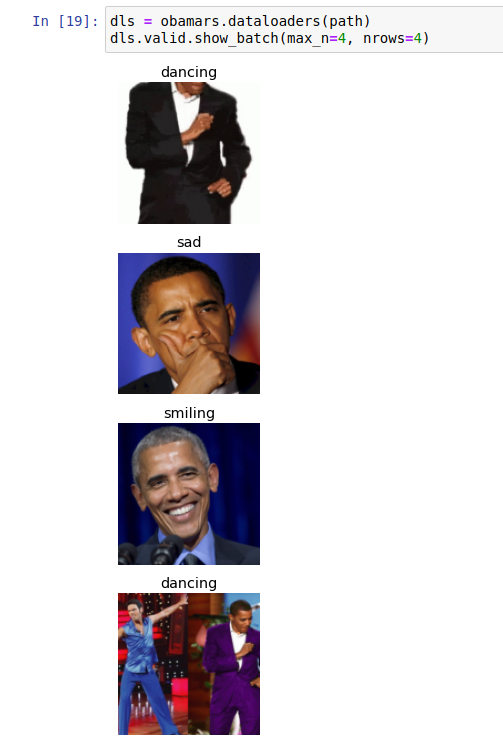

First Deep Learning Image Classifier using fastai
Is Obama happy, Sad or Dancing?
Goal
To make a simple image classifier using fastai and deploy it on the web.
Result
With fastai, it was possible to build a simple Convolution Neural
Network model (CNN), export it to a .pkl file and then deploy it on
Heroku. With this CNN model it was detected “if Obama was Happy, Sad
or Dancing”. Following is the screen shot of the final output.
The CNN when checked with a validation dataset, had an error rate of 8%-12%. I explain later why I think the error rate is not as low as 1%.
Why Obama
I have seen example projects where people are able to classify the type of bear, or type of game using fastai with almost 100% accuracy. I wanted to check how good, a simple Deep Learning Model can be to identify emotions or what people are doing.
I chose the “Obama dataset” as there were “many” pictures available of
him with a variety of emotions and associated labels on the WWW.
Links to the work
Summary of process
-
For computation I use a Gradient machine P5000 (16GB GPU and 30GB CPU)
-
Started with importing the right packages.
-
Downloaded and processed the labeled images from Bing.
-
Trained the CNN model.
-
Added augmentation transforms.
-
Varied number of epochs.
-
-
Exported a
pklfile of the model. -
Made a simple app using
Jupiterand deployed it usingHeroku, courtesy ofVoila.
Gathering data and “cleaning”
For this part, the Bing Image Search API was used which was
available as part of Azure Cognitive Services. The labels are stored
as the folder-name and folder contains the images. The labels used
are “sad”, “happy” and “dancing”.
During a cleaning process done after training, unique names are required for these images, so we append “sad”, “happy” and “dancing” to the file names of the respective folders. Images that don’t have any info in them are removed as well. The following shows a list of extracted images.

Making a simple model
For computer vision the current state of the art is CNN. Looking
at other classifications it appears the resnet18 architecture is
used. Here 18 stands for the number of layers variant of this
architecture.
It is not required to train this model afresh. A pre-trained model is used here basically resting on the shoulders of giants. The parameters of the pre-trained model is provided by fastai conveniently. This pre-training is based on 1.3 million photos (using the famous ImageNet dataset). So the Model has a rich understanding of shapes, colors, backgrounds already.
Image transformation
Typically preferred in such models is a square image (for historic
reasons that it was simple). Some sort of transforms need to be used
to bring all pictures of different shapes to the same square shape. We
could squish, add pads to make it square or even crop the images, but
in each of these cases we are getting unrealistic shapes, wasting
pixels or missing information respectively. Fastai allows an option
called Randomized Resized Cropping. At each epoch the image used is
a random crop of the image based on a min_size. In this case it is
set to 50%.
In addition to this, some augmentations are generated based on each image. With each epoch a random version is used. Different sets of augmentation includes, scaling the image disproportionately, flipping it, making it black and white etc… Some of those transformations are shown below.
Cleaning only after making the model
Now we straight up start the learner, to build on the pre-trained “ImageNet data coefficients” with the “additional data set”. Remember that the data has not been cleaned yet. So there are going to be bad images such as that of Michelle Obama instead of Obama, or even wrongly labeled images.
Once the training is done, we get to see the least confident images from the model and now we can start cleaning by either deleting or swapping them between folders. This is done with a convenient tool from fastai within Jupyter.
Changing the hyper-parameters
Without cleaning already the Algorithm got to 7% error rate on the validation dataset. This error rate is obviously not interesting as there are a lot of “bad images”. Once I removed the “bad images” (i.e., cleaned it), it went to around 12%. The Cleaning resulted in having about 5-15 images less in each folder.
At this point I added the augmented transforms and played with the number of epochs to discover they didn’t change much of the error rate. I was still running between 8-12% depending on the validation set generated each time I ran the entire simulation. Here is the confusion matrix based on final simulation with 12% error rate.
Why is the error rate “so high”?
Changing epochs or adding transformations doesn’t seem to be the changes this Model needs. Let’s look at the least confident and wrongly classified validation set,
What we see in the first (and second) image is that the Model thinks Obama is dancing, while the label says he is smiling. I can make some guesses that the model is confused that the hands are doing something like in the case of dancing. This just seems like an ambiguous situation for the Model. And I “feel” one of the ways to get by this, is to train the model with pictures of parades and pictures of Obama in conferences to “explain” to the model the differences between smiling and dancing in different scenarios. This requires more manual cleaning and getting more labeled data such as Obama at parades smiling and Obama in press conferences smiling. Finding such images with the right labels turned out to be hard and was not the objective of this excercise and so I have moved on.
Deployment
For deployment I tried Binder first and then moved to Heroku as I
had some errors in Binder and was not able to circumvent it. The app
is deployed here with Heroku. It was relatively easy to deploy
the app once we write it in Jupyter and it’s powered by Voila and
ipywidgets.
Conclusion
With this blog post a model to recognize if Obama is Happy, Sad or
Dancing is discussed. The app has been deployed online to Heroku.
Softwares/programs/packages used
- Github
- Heroku
- python
- fastai
- fastpages
- Binder
- Jupyter
- voila